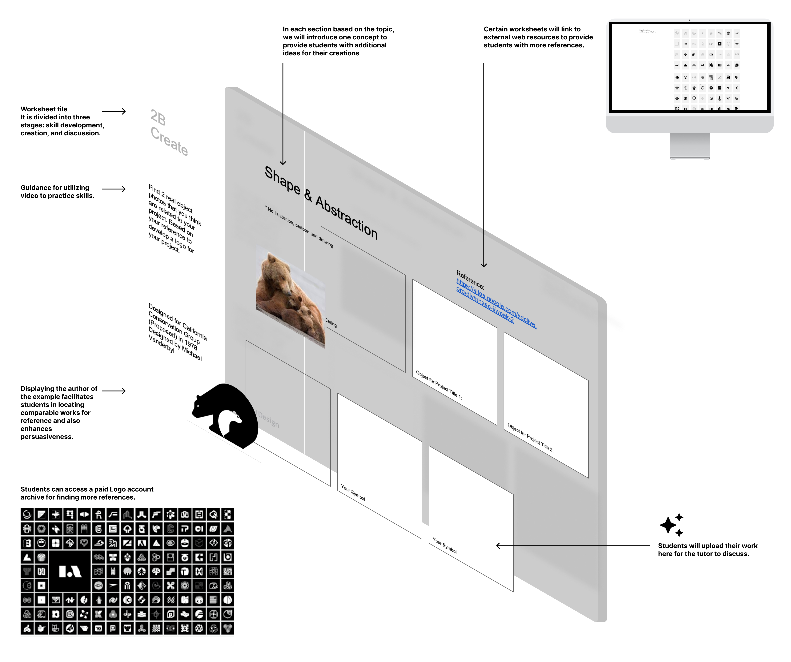
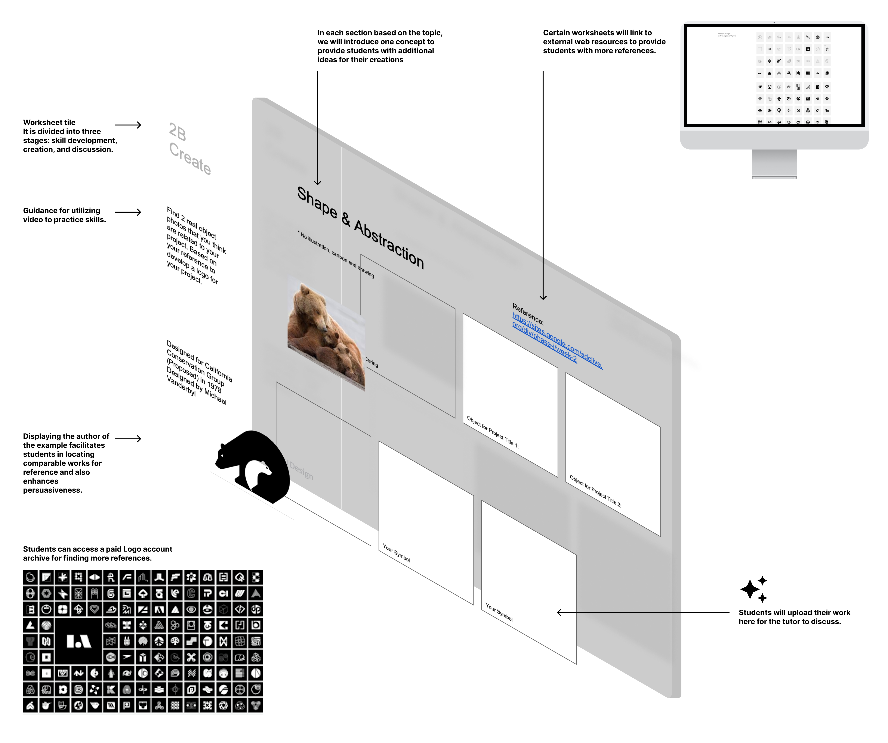
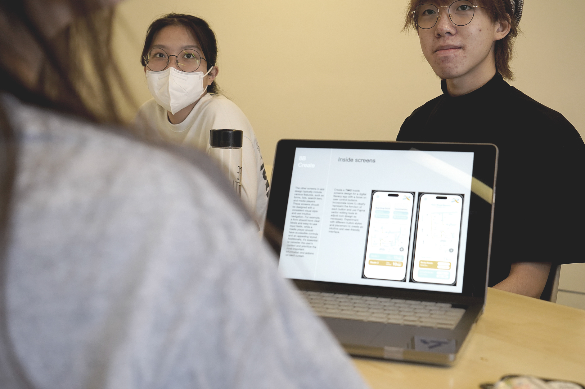
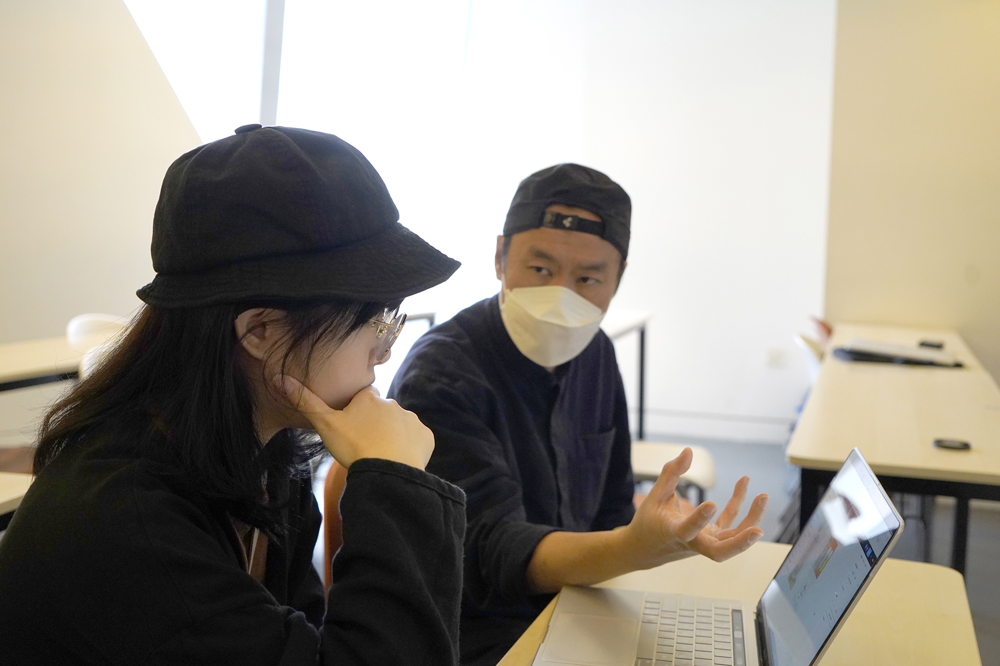
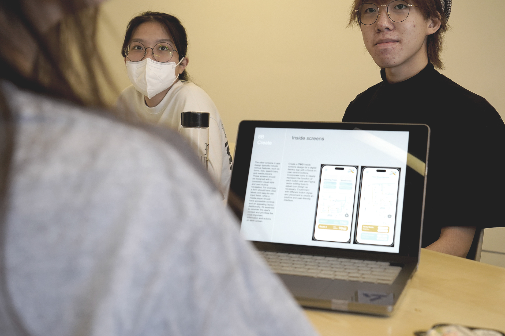
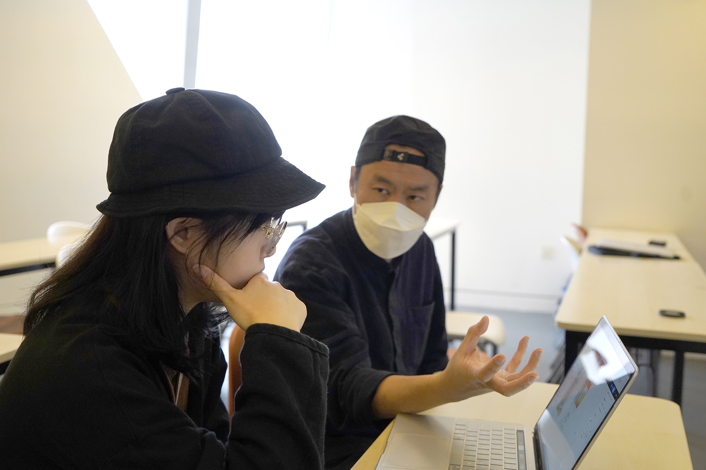

Project Overview
The School of Design (SD) will be launching a new curriculum in the next cohort as one of its aims is to increase interdisciplinary capacity in design-led innovation and it is vital that students gain knowledge in communication in order to be prepared to engage with different complex problems. SD1103 Communication Basics for Designers used to be a subject that serve for the needs of students to communicate concept graphicly and visually, in which some essential design application such as Adobe suite will be introduce during the class. However, after many years of teaching, our project team has realised that students acquire applied skills based on the needs of their projects and they can easily find answers from the internet, this keeps students not engaging in learning in the classroom. Therefore, if we teach these skills in advance and in a linear sequence, this is not effective and it wastes class time.
Learner-centred curriculum
By adapting an enquiry-based learning and flipped classroom approach, our project team can have the resources to prepare “problem-based projects” for students to work on. In addition, we can pre-arrange relevant skills for them to query during non-class time. In this case, students can have more time to look up skills for their specific projects and instructors can have more time to give advice and help them solve the problems they encounter.

In order to develop more effective content for students, bringing human-centred design into design education can help shape the experience of learning and teaching. Learner-centred curriculum design means giving learners the power to shape their own education through choice. It has similar to the nature of enquiry-based learning and the concept of human-centred design. The design thinking process will therefore be used in the research phase of this project, which will also be a first attempt for the visual communication discipline.


 
 
